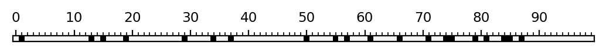
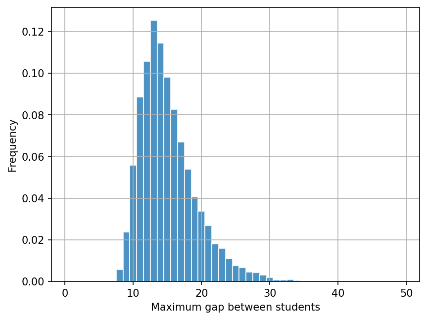
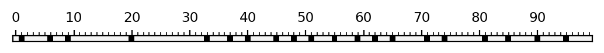

Lab 0: Setting up and Introduction#
For the class on Monday, January 6th
A. Check your Python installation#
Before you start, make sure you have already followed the instructions to create a Python environment for this course.
If you are not familiar with Jupyter notebook, I recommend that you first watch this video (starting at 1:46) to learn a bit more about the Jupyter notebook interface.
One of the most useful tips is to use Shift + Enter to run a cell!
Now, try running the following cell. You should see an “OK” for each package that is correctly installed.
# Check package versions. You don't need to understand the code in this cell.
import importlib
import packaging.version
def check_version(package_name, min_version):
try:
package_version = importlib.metadata.version(package_name)
except ModuleNotFoundError:
print(f'{package_name} is not available!')
return
print(f'{package_name} version is {package_version}', end=' ')
if packaging.version.parse(package_version) >= packaging.version.parse(min_version):
print("-- OK!")
else:
print(f"-- should be at least {min_version}!")
check_version("numpy", "1.26")
check_version("scipy", "1.13")
check_version("matplotlib", "3.8")
check_version("pandas", "2.2")
check_version("scikit-learn", "1.6")
check_version("tqdm", "4.67")
check_version("nbconvert", "7.16")
check_version("corner", "2.2")
check_version("emcee", "3.1")
numpy version is 2.2.1 -- OK!
scipy version is 1.15.1 -- OK!
matplotlib version is 3.10.0 -- OK!
pandas version is 2.2.3 -- OK!
scikit-learn version is 1.6.1 -- OK!
tqdm version is 4.67.1 -- OK!
nbconvert version is 7.16.5 -- OK!
corner version is 2.2.3 -- OK!
emcee version is 3.1.6 -- OK!
If any of the above packages doesn’t show an ‘OK’, ask Yao for help. Otherwise, proceed to Part B!
B. Student Seating#
Now we are going to tackle the student seating problem that we discussed in class.
To simplify the problem a bit, we will assume all the seats are arranged in a straight line, making this problem one-dimensional. We will also assume there are 100 seats and 20 students. Following Python’s indexing convention, the seats are labelled from 0 to 99.
If all the students choose the seats independently and uniformly at random,
then the occupied seats will be equivalent to choosing 20 numbers from 0 to 99 without replacement uniformly at random.
We can implement this behavior with numpy.random.choice.
You will find the implementation in the simulate_seating function below.
The code below also includes two other useful functions:
visualize_seating: displays the seats as an image, with occupied seats shown in black.find_gaps: takes in a list of the labels of the occupied seats and returns the sizes (lengths) of all the gaps.
Run the cell below to make these functions available for later use.
import numpy as np
import matplotlib.pyplot as plt
rng = np.random.default_rng()
def simulate_seating(n_seats, n_students):
return rng.choice(n_seats, n_students, replace=False)
def visualize_seating(seated, n_seats):
seats = np.zeros(n_seats, dtype=int)
seats[np.asarray(seated, dtype=int)] = 1
fig, ax = plt.subplots(dpi=200)
ax.matshow(np.atleast_2d(seats), cmap='gray_r', vmin=-0.05)
ax.set_xticks(np.arange(0, 100, 10))
ax.set_xticks(np.arange(0, 100), minor=True)
ax.tick_params('x', which="both", direction="out", bottom=False, labelsize="small")
ax.set_yticks([])
plt.show()
plt.close(fig)
def find_gaps(seated, n_seats):
seats_sorted = np.sort(np.asarray(seated, dtype=int))
gaps = np.ediff1d(np.concatenate([[-1], seats_sorted, [n_seats]])) - 1
return gaps[gaps > 0]
Now we can simulate the case when students choose seats uniformly at random by running the following cell.
The seated variable will contain the labels of the occupied seats,
and will be visualized as an image with visualize_seating.
Finally, the code prints out the maximum gap found in the seating map by using find_gaps and
np.max.
Run the cell below a few times to see a few different realizations. See if the maximum gap is consistent with what you find from the image.
n_seats = 100
n_students = 20
seated = simulate_seating(n_seats, n_students)
visualize_seating(seated, n_seats)
print("Maximum gap =", np.max(find_gaps(seated, n_seats)))

Maximum gap = 12
Now we are going to simulate 10,000 realizations.
For each realization, we will find the maximum gap in that realization and record the maximum gap value.
We will collect the maximum gap values for the 10,000 realizations in the list max_gap_dist,
and then we will make a normalized histogram of these maximum gap values.
Run the following two cells. The first cell will run the 10,000 realizations and the second cell will plot the histogram.
from tqdm.notebook import trange # trange is the same as range but shows a progress bar
n_trials = 10000
max_gap_dist = []
for _ in trange(n_trials):
seated = simulate_seating(n_seats, n_students)
max_gap = np.max(find_gaps(seated, n_seats))
max_gap_dist.append(max_gap)
fig, ax = plt.subplots(dpi=150)
ax.hist(max_gap_dist, bins=np.arange(0.5, 50), density=True, alpha=0.8, edgecolor="w")
ax.grid(True)
#ax.set_yscale("log")
ax.set_xlabel("Maximum gap between students")
ax.set_ylabel("Frequency");

This histogram shows the frequency of each possible maximum gap value that occurs among the 10,000 realizations. The “most likely” maximum gap value should be around 13.
Some of the very unlikely maximum gap values have very tiny frequencies that you may not be able to see
on the histogram plot. You can uncomment the line ax.set_yscale("log") (removing the leading # sign)
in the above cell and see the frequencies plotted in log scale.
So far we have been doing the simulation under the assumption that the students choose seats uniformly at random. But the question at hand is whether this assumption (hypothesis) is consistent with reality.
Let’s say you go into a classroom and record the seating map that you observe, which is stored in the seated_observed variable below.
Run the cell below, and it will visualize the observed seating map and calculate the maximum gap value for that map.
When you are done, answer the questions below.
seated_observed = [1, 6, 9, 20, 33, 37, 40, 45, 48, 51, 55, 59, 62, 65, 71, 74, 81, 85,
90, 95]
visualize_seating(seated_observed, n_seats)
print("Maximum gap observed =", np.max(find_gaps(seated_observed, n_seats)))

Maximum gap observed = 12
📝 Questions
Based only on the value of the observed maximum gap and the simulated maximum gap histogram that you generated earlier, would you say the observed seating map is consistent with the assumption that the students choose seats uniformly at random? Why or why not?
Based only on the visualization of the observed seating map, would you say the observed seating map is consistent with the assumption that the students choose seats uniformly at random? Why or why not?
If your answers to (1) and (2) differ, what might be the reasons behind the discrepancy?
Instead of using the maximum gap to check consistency, we can use other statistics as well. For example, what if we use the minimum gap instead? Try this by changing
np.maxtonp.minin the above cells. You can also try other statistics that you can come up with. How would your answer to (1) change when you use different statistics?
Tip
Submit your notebook
Follow these steps when you complete this lab and are ready to submit your work to Canvas:
Check that all your text answers, plots, and code are all properly displayed in this notebook.
Run the cell below.
Download the resulting HTML file
00.htmland then upload it to the corresponding assignment on Canvas.
!jupyter nbconvert --to html --embed-images 00.ipynb